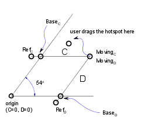
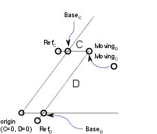

| << 2D Shapes | Back to the main page | Status Codes >> |
Hotspot-based interactive graphical editing of length and angle type GDL parameters.
HOTSPOT x, y, z [, unID [, paramReference [, flags [, displayParam [, "customDescription"]]]]]HOTSPOT2 x, y [, unID [, paramReference [, flags [, displayParam [, "customDescription"]]]]]unID: unique identifier, which must be unique among the hotspots defined in the library part.paramReference: parameter that can be edited by this hotspot using the graphical hotspot based parameter editing method.displayParam:
parameter to display in the information palette when editing the paramRefrence parameter.
Members of arrays can be passed as well.
customDescription:
custom description string for the displayed parameter in the information palette.
When using this option, displayParam must be set as well (use paramReference for default).
The value set for the moving type hotspot will be displayed only.
It is recommended to set the same description for all moving hotspots having the same base hotspot.
Examples of valid arguments:
D, Arr[5], Arr[2*I+3][D+1], etc.
flags: hotspot’s type + hotspot’s attribute:type: 1: length type editing, base hotspot,2: length type editing, moving hotspot,3: length type editing, reference hotspot (always hidden),4: angle type editing, base hotspot,5: angle type editing, moving hotspot,6: angle type editing, center of angle (always hidden),7: angle type editing, reference hotspot (always hidden).attribute: Can be zero or:attribute = 128*j8 + 256*j9 + 512*j10 + 1024*j11, where each j can be 0 or 1.
j8: hide hotspot (meaningful for types: 1,2,4,5),j9: editable base hotspot (for types: 1,4),j10: reverse the angle in 2D (for type 6),j11: use paramReference value as meters in paper space.To edit a length type parameter, three hotspots must be defined with types 1, 2 and 3. The positive direction of the editing line is given by the vector from the reference hotspot to the base hotspot. The moving hotspot must be placed along this line at a distance determined by the associated parameter’s value, measured from the base hotspot.
To edit an angle type parameter, in 3D four hotspots must be defined with types 4, 5, 6 and 7. The plane of the angle is perpendicular to the vector that goes from the center hotspot to the reference hotspot. The positive direction in measuring the angle is counter-clockwise if we look at the plane from the reference hotspot. In 2D the plane is already given, so the reference hotspot is ignored, and the positive direction of measuring the angle is by default counter-clockwise. This can be changed to clockwise by setting the 512 attribute flag for the center hotspot (type 6). To be consistent, the vectors from the center hotspot to the moving and the base hotspots must be perpendicular to the vector from the center to the reference hotspot. The moving hotspot must be placed at an angle determined by the associated parameter measured from the base hotspot around the center hotspot.
If several sets of hotspots are defined to edit the same parameter, hotspots are grouped together in the order of the execution of the hotspot commands. If the editable attribute is set for a base hotspot, the user can also edit the parameter by dragging the base hotspot. Since the base hotspot is supposed to be fixed in the object’s coordinate frame (i.e. its location must be independent of the parameter that is attached to it), the whole object is dragged or rotated along with the base point. (As the parameter’s value is changing, the moving hotspot will not change its location.)
Two length type sets of hotspots can be combined to allow editing of two parameters with only one dragging. If two are combined, the motion of the hotspot is no longer constrained to a line but to the plane determined by the two lines of each set of length editing hotspots. In 3D, the combination of three sets of length editing hotspots allows the hotspot to be placed anywhere in space. The two lines must not be parallel to each other, and the three lines must not be on the same plane. A combined parameter editing operation is started if, at the location of the picked point, there are two editable hotspots (moving or editable base) with different associated parameters. If parameters are designed for combined editing, the base and reference hotspots are not fixed in the object’s coordinate frame, but must move as the other parameter’s value changes.
See illustration and example 2.
Example 1: Angle editing in 2D
LINE2 0, 0, A, 0 LINE2 0, 0, A*COS(angle), A*SIN(angle) ARC2 0, 0, 0.75*A, 0, angle HOTSPOT2 0, 0, 1, angle, 6 HOTSPOT2 0.9*A, 0, 2, angle, 4 HOTSPOT2 0.9*A*COS(angle), 0.9*A*SIN(angle), 3, angle, 5
Example 2: Combined length type editing with 2 parameters in 2D
|

|

|
! sideX, sideY parameters RECT2 0, 0, A, B RECT2 0, 0, sideX, sideY HOTSPOT2 sideX, 0, 1, sideY, 1 HOTSPOT2 sideX, -0.1, 2, sideY, 3 HOTSPOT2 sideX, sideY, 3, sideY, 2 HOTSPOT2 0, sideY, 4, sideX, 1 HOTSPOT2 -0.1, sideY, 5, sideX, 3 HOTSPOT2 sideX, sideY, 6, sideX, 2
Example 3: Simple length type editing with 1 parameter
!2D SCRIPT: HOTSPOT2 -1, 0, 1 HOTSPOT2 1, 0, 2 HOTSPOT2 0, 0, 3, corner_y, 1+128 HOTSPOT2 0, -1, 4, corner_y, 3 HOTSPOT2 0, corner_y, 5, corner_y, 2 LINE2 -1, 0, 1, 0 LINE2 -1, 0, 0, corner_y LINE2 1, 0, 0, corner_y
!3D SCRIPT:
HOTSPOT -1, 0, 0, 1
HOTSPOT -1, 0, 0.5, 2
HOTSPOT 1, 0, 0, 3
HOTSPOT 1, 0, 0.5, 4
HOTSPOT 0, 0, 0, 5, corner_y, 1+128
HOTSPOT 0, -1, 0, 6, corner_y, 3
HOTSPOT 0, corner_y, 0, 7, corner_y, 2
HOTSPOT 0, 0, 0.5, 8, corner_y, 1+128
HOTSPOT 0, -1, 0.5, 9, corner_y, 3
HOTSPOT 0, corner_y, 0.5, 10, corner_y, 2
PRISM_ 4, 0.5,
-1, 0, 15,
1, 0, 15,
0, corner_y, 15,
-1, 0, -1Example 4: Combined length type editing with 2 parameters:
!2D SCRIPT: HOTSPOT2 -1, 0, 1 HOTSPOT2 1, 0, 2 HOTSPOT2 corner_x, 0, 3, corner_y, 1+128 HOTSPOT2 corner_x, -1, 4, corner_y, 3 HOTSPOT2 corner_x, corner_y, 5, corner_y, 2 HOTSPOT2 0, corner_y, 6, corner_x, 1+128 HOTSPOT2 -1, corner_y, 7, corner_x, 3 HOTSPOT2 corner_x, corner_y, 8, corner_x, 2 LINE2 -1, 0, 1, 0 LINE2 -1, 0, corner_x, corner_y LINE2 1, 0, corner_x, corner_y
!3D SCRIPT:
HOTSPOT -1, 0, 0, 1
HOTSPOT -1, 0, 0.5, 2
HOTSPOT 1, 0, 0, 3
HOTSPOT 1, 0, 0.5, 4
HOTSPOT corner_x, 0, 0, 5, corner_y, 1+128
HOTSPOT corner_x, -1, 0, 6, corner_y, 3
HOTSPOT corner_x, corner_y, 0, 7, corner_y, 2
HOTSPOT 0, corner_y, 0, 8, corner_x, 1+128
HOTSPOT -1, corner_y, 0, 9, corner_x, 3
HOTSPOT corner_x, corner_y, 0, 10, corner_x, 2
HOTSPOT corner_x, 0, 0.5, 11, corner_y, 1+128
HOTSPOT corner_x, -1, 0.5, 12, corner_y, 3
HOTSPOT corner_x, corner_y, 0.5, 13, corner_y, 2
HOTSPOT 0, corner_y, 0.5, 14, corner_x, 1+128
HOTSPOT -1, corner_y, 0.5, 15, corner_x, 3
HOTSPOT corner_x, corner_y, 0.5, 16, corner_x, 2
PRISM_ 4, 0.5,
-1, 0, 15,
1, 0, 15,
corner_x, corner_y, 15,
-1, 0, -1GDL Reference Guide
Copyright© 2022 by GRAPHISOFT, all rights reserved. Reproduction, paraphrasing or translation without express prior written permission is strictly prohibited.